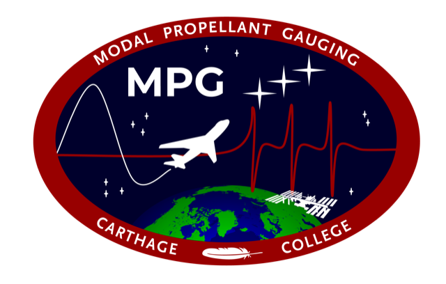
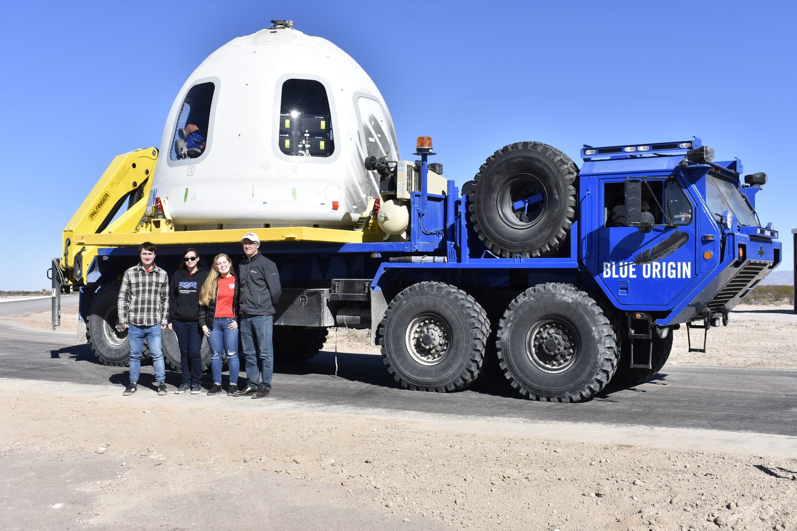
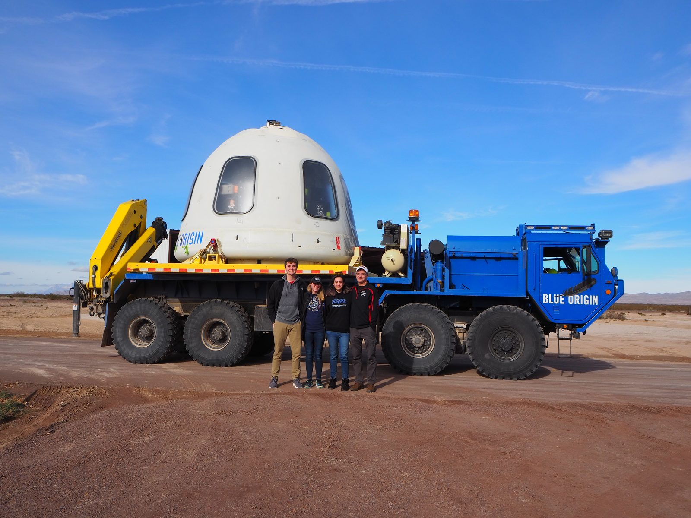
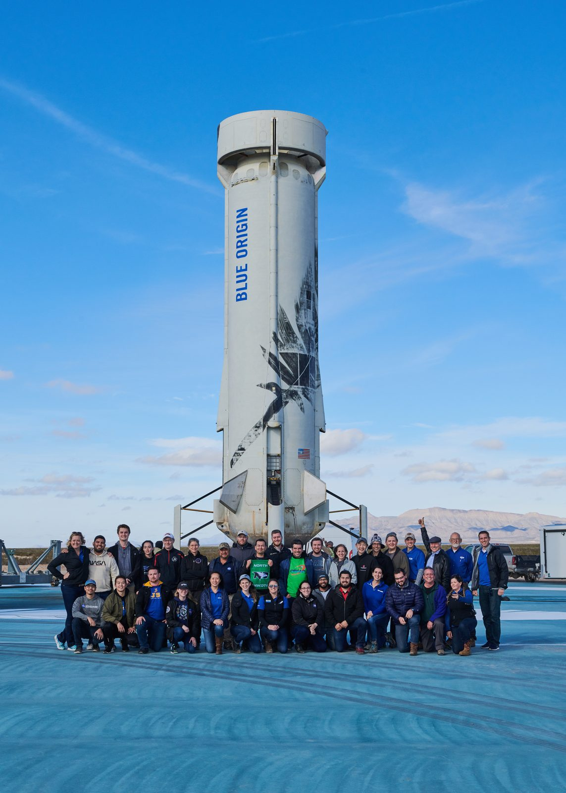
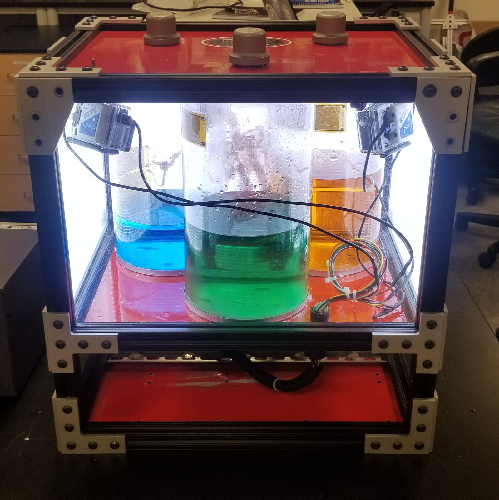
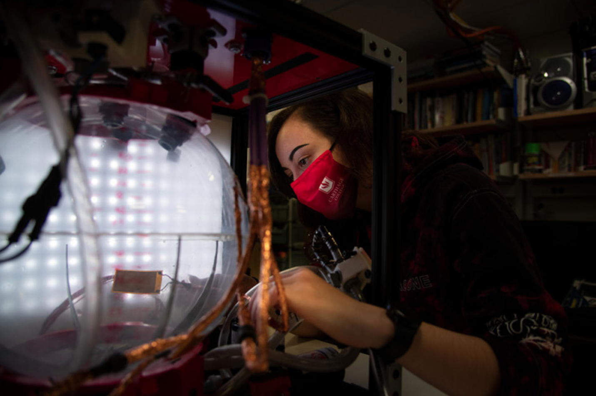
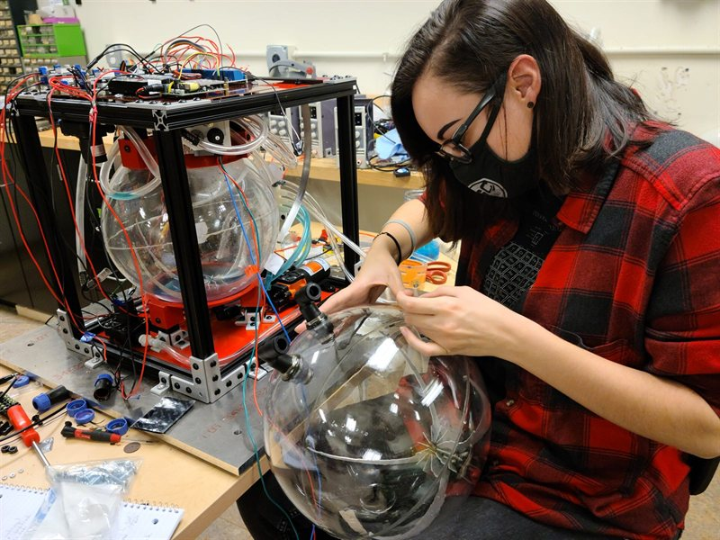
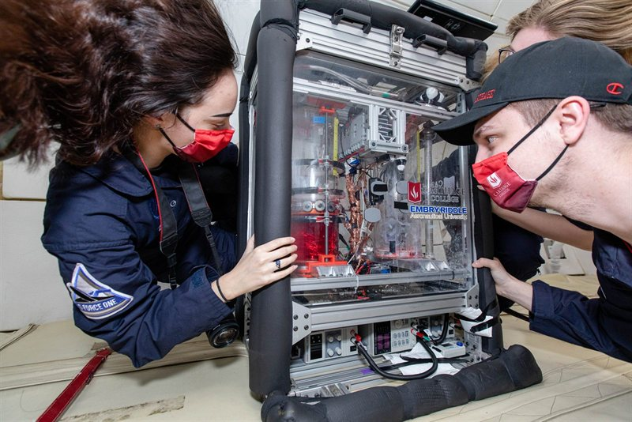
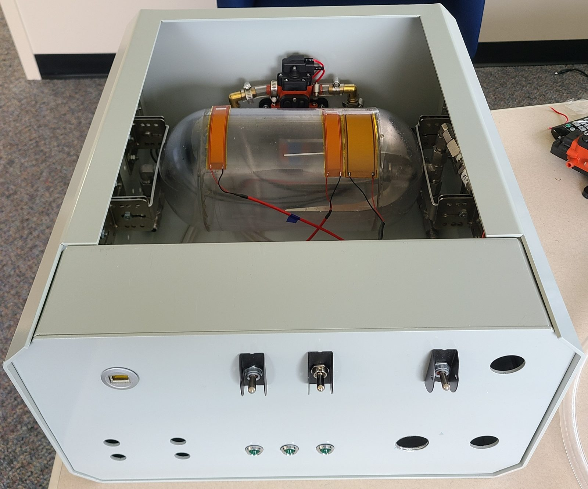

Carthage College Microgravity Research
2/2018–5/2021 · NASA Flight Opportunities
Throughout my undergraduate career at Carthage College, I worked on a series of microgravity fluids experiments built around Modal Propellant Gauging (MPG), a lightweight, cost-efficient, and high-resolution fuel gauging system for low-gravity environments. MPG estimates how much liquid is in a tank from the tank's vibration response, since the tank's natural frequencies shift as the fill level changes.
These payloads flew aboard Blue Origin's New Shepard and on Zero-G parabolic flights, and the work continued at NASA Kennedy Space Center with a version of MPG built for the International Space Station.

Modal Propellant Gauging - Blue Origin Payload (MPG-BOP)
Mission Team Lead, Data Acquisition & Analyst Lead, Lead Mechanical Engineer · 2/2018–5/2021
Throughout my undergraduate career, I contributed to the development of MPG and prepared this payload for two suborbital missions aboard Blue Origin’s New Shepard vehicle in January and December 2019.
I joined MPG-BOP in my freshman year as a mechanical team member, focusing on using SolidWorks to update the payload design and making the same modifications to the physical experiment.
Over the following year, I advanced to both Mission Team Lead and Data Acquisition & Analyst Lead. I became proficient in using the SLICE Micro system from DTS for data collection and developed and improved existing MATLAB scripts to generate frequency response functions from modal data.
Read the 2018 and 2019 Wisconsin Space Grant Consortium papers →








Modal Propellant Gauging - Propellant Refueling and on-Orbit Transfer Operations (MPG-PROTO)
Data Acquisition & Analyst Lead, Mechanical Engineer · 9/2019–5/2021
MPG-PROTO is an advanced iteration of the MPG-BOP payload, designed to study liquid flow between two tanks in microgravity. This experiment was developed for both New Shepard and Zero-G parabolic flight campaigns.
I played a key role in designing the payload from scratch, sourcing parts, and leading the assembly process. Additionally, my team and I were responsible for creating essential documentation for future students to continue the project. This included, but was not limited to, a concept of operations, testing procedure documents, a detailed integration plan, and a bill of materials.
The experiment focused on fluid dynamics inside both spherical and cylindrical propellant tanks in microgravity. We tested propellant management devices (PMDs), designed to direct liquid toward a designated port during low fill fractions. My primary design contributions were made using Autodesk Inventor.




Magneto-active Slosh Control (MaSC)
Mission Team Lead, Lead Mechanical Engineer · 9/2018–5/2021
MaSC is a collaborative effort between Carthage College and Embry-Riddle Aeronautical University aimed at suppressing slosh in propellant tanks in low-gravity environments. The experiment utilizes Helmholtz coils and a metallic alloy membrane inside the tank to influence fluid movement.
This experiment was integrated into an existing payload from a previous iteration of MPG. My primary responsibilities included designing, fabricating, and testing new cylindrical polycarbonate tanks, ensuring space for the metallic membrane. Additionally, I used Autodesk Inventor to contribute to the design and structural support of the Helmholtz coil mounts.
The MaSC project was highlighted by NASA Flight Opportunities. Read the post on NASA's website →


Modal Propellant Gauging on the International Space Station (MPG-ISS)
NASA Kennedy Space Center OSTEM Intern · 6/2020–8/2020 & 6/2021–8/2021
I was selected for an internship at NASA Kennedy Space Center’s Advanced Engineering Development Branch during the summers of 2020 and 2021. My role involved designing, building, and testing a payload intended to fly aboard a SpaceX Dragon capsule for testing on the International Space Station (ISS).
During these 10-week internships, I collaborated with a team of engineers to develop and construct a payload implementing MPG. I designed and modeled the experiment using Autodesk Inventor, and coordinated with external companies and Kennedy Space Center laboratories to manufacture custom components for the experiment.
Read the MPG-ISS abstract and paper →

